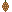

Over deze Workshop
Kerstsfeer, met uw eigen handen gemaakt
Niets ruikt zo naar kerst als vers groen. Tijdens deze workshop maakt u van takken, natuurlijke materialen en feestelijke decoraties uw eigen kerstkrans of kerststukje. U kiest zelf de stijl: klassiek rood en groen, natuurlijk en ingetogen, of juist sprankelend met goud en zilver.
Onze ervaren makers laten u stap voor stap zien hoe het werkt: hoe u het groen mooi vol en rond verwerkt, hoe u decoraties stevig vastzet en hoe u alles afwerkt tot een sfeervol geheel. Zo ontdekt u alle kneepjes van het vak, terwijl u in een gezellige sfeer aan uw eigen ontwerp werkt.
Deze workshop geven wij alleen op onze eigen locaties: in ons atelier of buiten tussen de alpaca's op de Alpaca Farm, allebei in de Betuwe. Daar staan het verse groen, de takken en alle decoraties al voor u klaar, zodat u meteen aan de slag kunt.
Alleen op onze locatie
Let op: deze workshop komen wij niet bij u op locatie geven. U bent van harte welkom in ons gezellige atelier of tussen de alpaca's op de Alpaca Farm, allebei in de Betuwe. Een kerststukje maken met alpaca's om u heen: dat maakt de kerstsfeer helemaal compleet.
Krans of Kerststukje?
U kiest zelf wat u maakt. Om u op weg te helpen, werken wij onder andere met:
 Vers groen en takken
Vers groen en takken
Dennenappels en natuurlijke materialen Linten en strikken
Linten en strikken Kerstballen en seizoensdecoraties
Kerstballen en seizoensdecoraties
Welke decoraties er precies zijn, kan per workshop en seizoen verschillen. Heeft u een speciale wens, zoals een thema of de kleuren van uw bedrijf? Vermeld het in uw aanvraag.
De workshop
Iedere deelnemer maakt een eigen kerstkrans of kerststukje. Wij helpen u om uw idee om te zetten in een creatie om trots op te zijn. Aan het einde van de workshop gaat iedereen naar huis met een eigen, unieke kerstdecoratie: voor uw eigen voordeur of kersttafel, of als handgemaakt cadeau voor iemand anders.
 Creatieve Vrijheid
Creatieve Vrijheid
Geen ervaring nodig. Onze workshops zijn ontworpen voor deelnemers van alle niveaus.
Kies Uw Stijl
Van klassiek rood en groen tot natuurlijk of sprankelend: u bepaalt zelf de sfeer.
Mee Naar Huis
U gaat naar huis met uw eigen krans of kerststukje, een uniek cadeau of pronkstuk.
 Hapje & Drankje
Hapje & Drankje
Creëer in een ontspannen, gezellige sfeer, ideaal voor groepen en kerstborrels.
Wat Maakt Deze Workshop Bijzonder?
Deze workshop is de ideale start van de feestdagen. De geur van vers groen, de gezelligheid aan tafel en het plezier van samen iets moois maken zorgen voor echte kerstsfeer. Geen twee creaties worden hetzelfde, en u maakt iets wat u de hele decembermaand met plezier laat zien. Of u nu op zoek bent naar een origineel teamuitje, een feestelijke kerstborrel of gewoon een gezellige middag: deze workshop biedt alles.
Zo heeft u het langst plezier van uw krans
Tijdens de workshop vertellen wij u hoe u uw krans of kerststukje het beste verzorgt, zodat u er zo lang mogelijk van geniet:
- Koel en buiten de zon. Vers groen blijft het mooist op een koele plek, uit de volle zon en niet vlak bij de verwarming.
- Veilig met kaarsen. Zit er een kaars in uw kerststukje? Laat die nooit onbeheerd branden en blaas hem uit voordat hij bij het groen komt.
Praktische Informatie
De workshop Kerstkransen en Kerststukjes Maken in het kort:
- Duur: 2 uur
- Professionele begeleiding
- Inclusief materialen (voor ieder wat wils)
- Voor beginners en gevorderden
- De kunstenaar maakt sfeerfoto's en een groepsfoto na afloop
U hoeft alleen uw creativiteit mee te brengen! De workshop kan voor groepen worden georganiseerd, in ons atelier of tussen de alpaca's, allebei in de Betuwe. Wij komen voor deze workshop niet bij u op locatie. Voor meer informatie over data, prijzen en het reserveren van uw plaats, neem contact met ons op. Wij beantwoorden graag al uw vragen!
Klaar voor de kerstsfeer?
Reserveer nu uw plek en kom uw eigen kerstkrans of kerststukje maken. Wij helpen u graag met alle informatie over beschikbare data en prijzen.